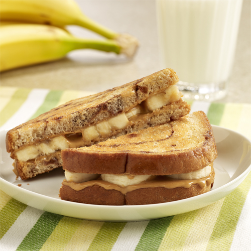

Sandwich

Description
Its a sandwich.
- Cooking Spray
- Peanut Butter
- Bread
- Banana
Steps
- Heat a skillet or griddle over medium heat, and coat with cooking spray. Spread 1 tablespoon of peanut butter onto one side of each slice of bread. Place banana slices onto the peanut buttered side of one slice, top with the other slice and press together firmly. Fry the sandwich until golden brown on each side, about 2 minutes per side.